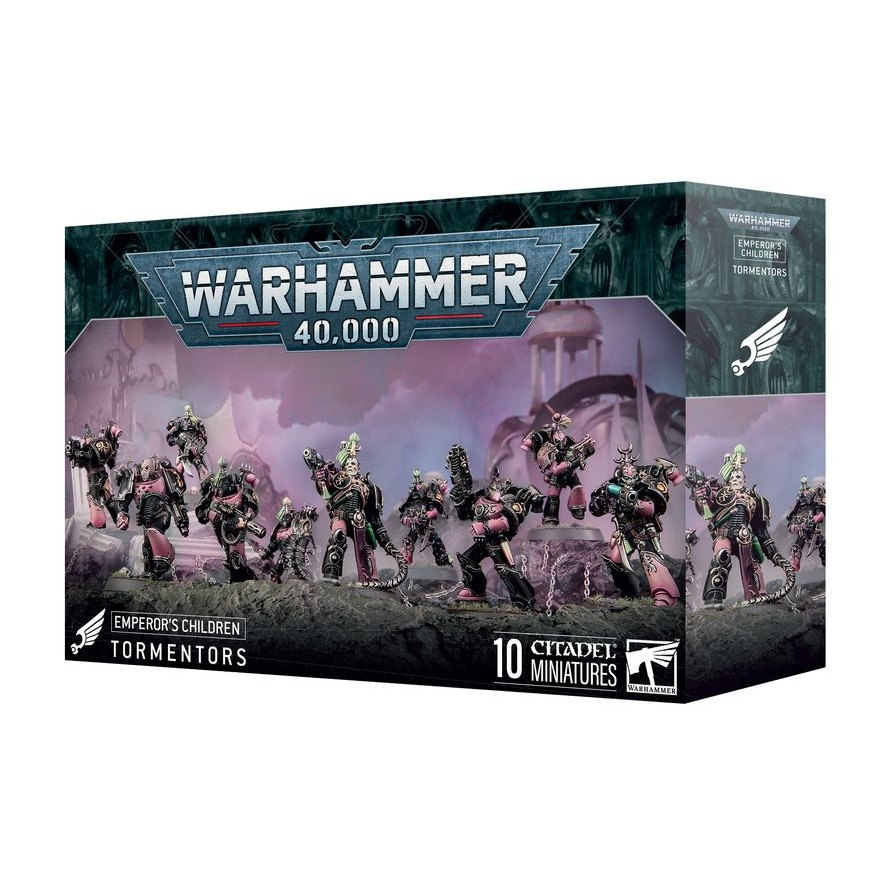
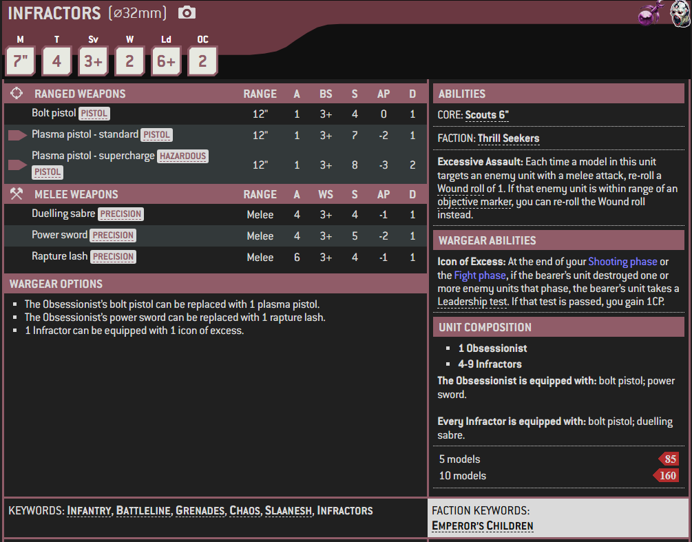

1 / 3

Miniature
2 / 3

Box Art (Tormentors and Infractors share a box)
3 / 3

Artwork

Infractors are Chaos Space Marines of the Emperor's Children Legion who are one of the two major formations found among that Traitor Legion's common Heretic Astartes alongside the Tormentors. They are specialists in melee combat.
Even the most common Chaos Space Marines among Fulgrim's Traitor Legion are masters of their own brand of warfare, and are often found collected into two distinct formations based on their tactical preferences. Infractors are obsessed with experiencing every sensation the galaxy has to offer and hurl themselves into close combat with wicked duelling sabres, determined to hunt down the most glorious opponents and prove their superiority at the edge of a blade.
Infractors are drug-fuelled killers who seek only to gain new sensations by engaging in bloody, extreme, and sensationally wanton close combat with the enemy. Unless given sufficient incentive to do otherwise, Infractors will simply kill, move on, and kill again while completely ignoring most other objectives. Swift and arrogant, they view enemy positions as a personal affront and will instead push deep into hostile territory to kill for its own sake.
Rarely fighting as part of a cohesive combined arms force, Infractors expect others within their warband to keep up with them and are known to violently oppose attempts to restrain their swift advances. Always looking for the next challenge, unlike Flawless Blades they are not particular about who they inflict violence upon. However, they still possess a monstrous ego and view the battlefield as their own personal domain set up by Slaanesh to allow them to slice apart their foes.
